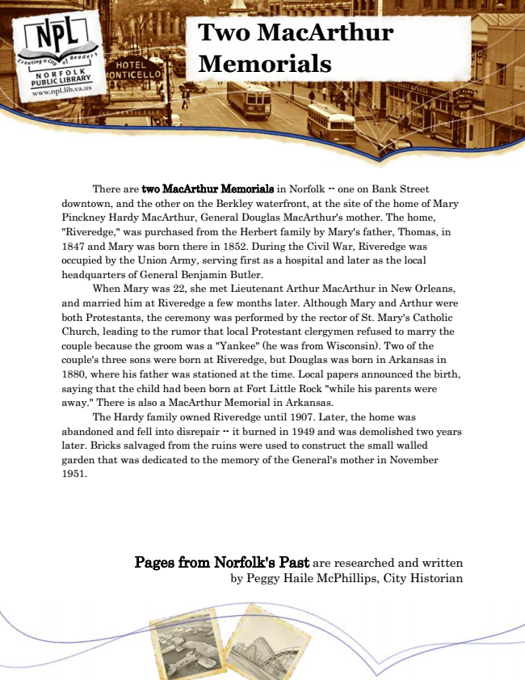

Two MacArthur Memorials
There are two MacArthur Memorials in Norfolk -- one on Bank Street downtown, and the other on the Berkley waterfront, at the site of the home of Mary Pinckney Hardy MacArthur, General Douglas MacArthur's mother. The home, "Riveredge," was purchased from the Herbert family by Mary's father, Thomas, in 1847 and Mary was born there in 1852. During the Civil War, Riveredge was occupied by the Union Army, serving first as a hospital and later as the local headquarters of General Benjamin Butler.
When Mary was 22, she met Lieutenant Arthur MacArthur in New Orleans, and married him at Riveredge a few months later. Although Mary and Arthur were both Protestants, the ceremony was performed by the rector of St. Mary's Catholic Church, leading to the rumor that local Protestant clergymen refused to marry the couple because the groom was a "Yankee" (he was from Wisconsin). Two of the couple's three sons were born at Riveredge, but Douglas was born in Arkansas in 1880, where his father was stationed at the time. Local papers announced the birth, saying that the child had been born at Fort Little Rock "while his parents were away." There is also a MacArthur Memorial in Arkansas.
The Hardy family owned Riveredge until 1907. Later, the home was abandoned and fell into disrepair -- it burned in 1949 and was demolished two years later. Bricks salvaged from the ruins were used to construct the small walled garden that was dedicated to the memory of the General's mother in November 1951.
Pages from Norfolk's Past are researched and written by Peggy Haile McPhillips, City Historian